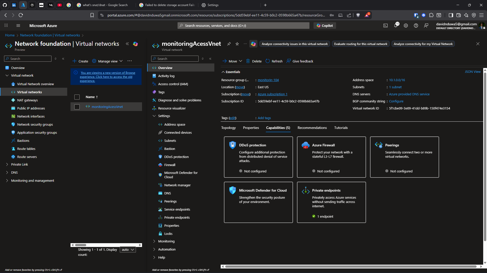
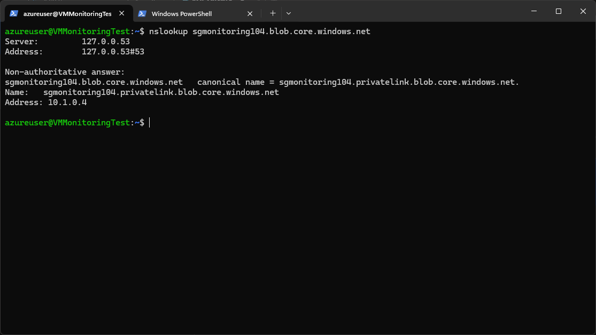
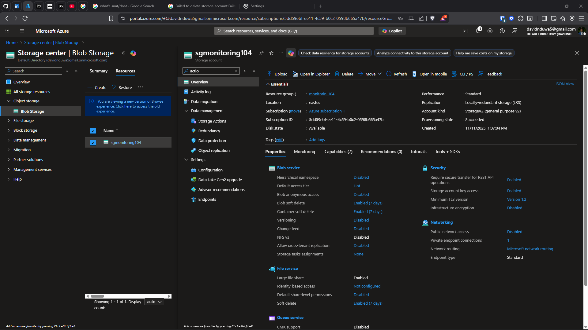

Problem
Lack of centralized logging limits visibility into infrastructure behavior. Without monitoring, security incidents go undetected and troubleshooting becomes guesswork.
Architecture
Log Analytics workspace as central sink. Diagnostic settings on NSGs, storage accounts, and VNets forward logs. KQL queries provide on-demand analysis. Private Endpoints ensure log traffic stays on backbone.

Vnet

Log Analytucs
Diagnostic Setting

Kql Query
Implementation
- Diagnostic settings configured → Log Analytics workspace
- Storage activity logs enabled for audit trail
- 4 custom KQL queries created for traffic analysis
- Private Endpoint for secure log ingestion
- NSG flow logs forwarded to workspace
- PowerShell and CLI verification scripts
Validation
- Log ingestion confirmed within 2–5 minutes of configuration
- Firewall activity visible in Log Analytics queries
- Storage events captured and queryable
- Query history validated for reproducibility
- nslookup confirmed private DNS resolution for endpoints

Nslookup
Query History

Sgmonitoring104

Add Diaggnostic
Quantified Outcomes
- 4 reusable KQL queries developed and validated
- Verified 100% log ingestion from all configured resources
- Log ingestion latency: 2–5 minutes
- Improved troubleshooting speed during simulated failures
Failure Scenarios Tested
- Disabled diagnostic setting → confirmed log gap within minutes
- Attempted public storage access with Private Endpoint → blocked
- Queried non-existent table → verified KQL error handling
- Simulated NSG deny event → confirmed log capture
Operational Considerations
- In production: set log retention policies (30/90/365 day tiers)
- Configure alert rules on KQL queries for automated incident response
- Export logs to Azure Sentinel for SIEM integration
- Monitor workspace ingestion costs with usage queries
- Implement workbook dashboards for team visibility
Lessons Learned
- Monitoring must be configured at deployment time, not retrofitted
- KQL is essential for any Azure operations role
- Private Endpoints for monitoring prevent log exfiltration
- Diagnostic settings per-resource gives granular control
Business Impact
Enabled centralized visibility for operational monitoring and security review. Reduced mean time to detect and troubleshoot infrastructure issues.